why software is slow; diagnosing and fixing a real site.
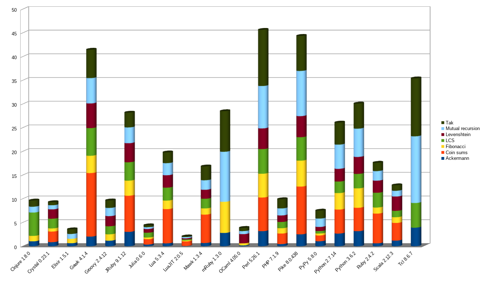
by Ryan Alport
there are some constants when it comes to the speed of software, mostly determined by hardware and simple physics, speed of light, clock speed, i/o speed, etc.
still, we can make better decisions in code and infrastructure that mean we simply pay those constant costs fewer times.
everyone should understand the basic unit of computer execution, the instruction.
an instruction does a simple operation like load or store a value from memory, do arithmetic on loaded values, make system calls, etc. this is as close as we programmers go to the transistor.
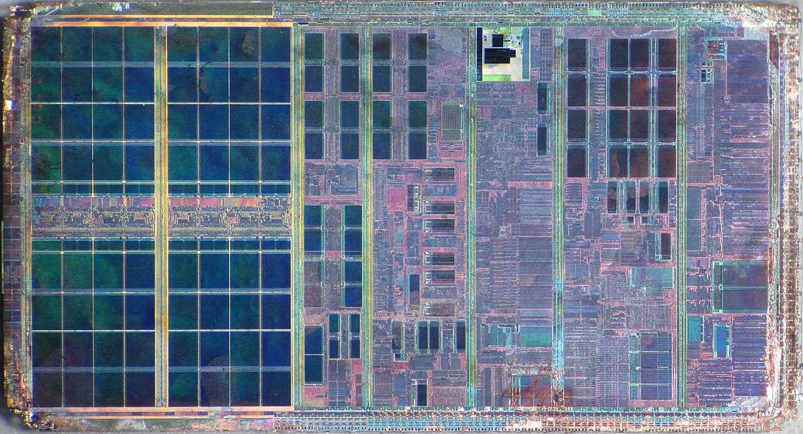
instruction speed can vary, we measure in clock cycles, depending on memory access, the instruction itself, scheduling, a single instruction can take a few clock cycles to a few hundred. still nanoseconds.
any program you write must either be compiled into ready to use instructions or it uses an interpreter to translate as it runs.
in different programming languages, code will turn into different instructions with varying complexity.
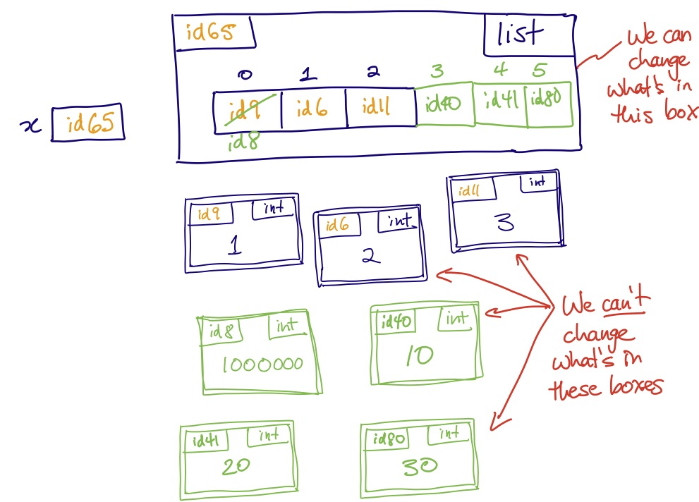
all python values are heap objects with ids and types, reached through multiple levels of pointers and checks.
compare to c where values are binary numbers in memory. python hides this complexity for us at a cost.
once you leave your own process, you enter the network. packets go through your kernel, your nic, switches, routers, fiber optic cables, another computer's stack, then back again.
light in fiber optic cables goes 200 km per millisecond. round trips across regions are measured in milliseconds.
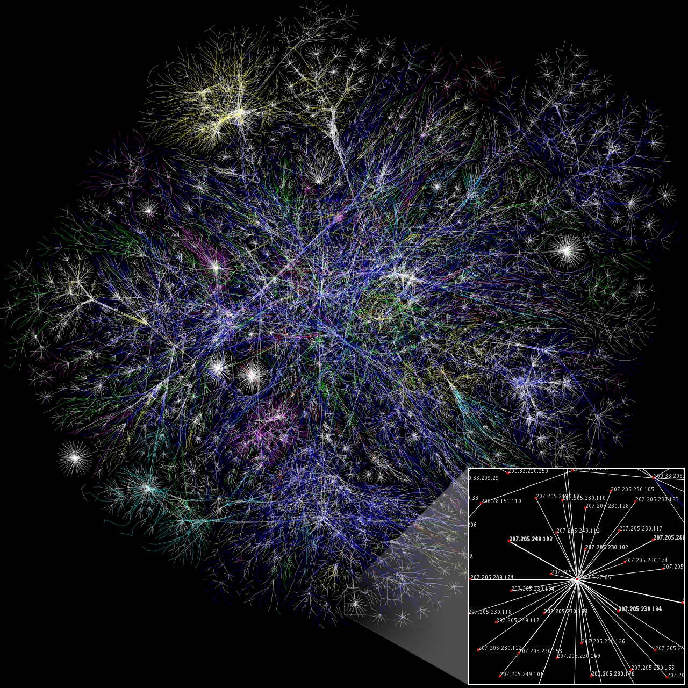
an L1 cache hit is sub-nanosecond. a packet from china to europe is 150 milliseconds.
io is when your program asks the kernel to do something. the process may or may not need to wait for it.
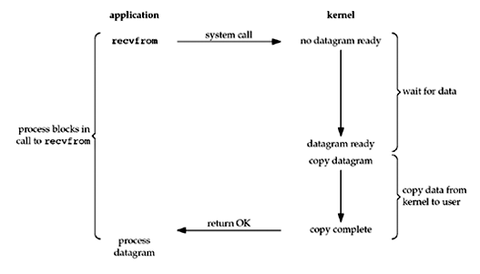
in the browser you can see this idea present, we must wait on the previous thing whether we need it or not.
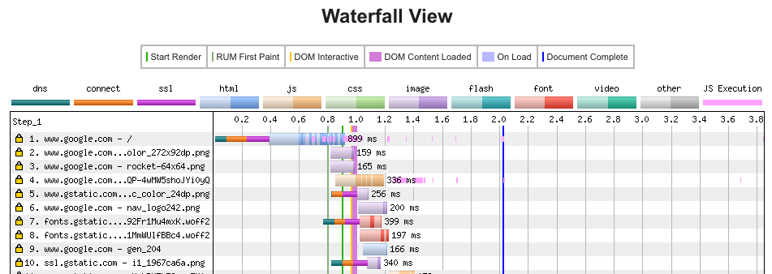
good io shape looks like less round trips. batch reads, overlap waits, work with what you've got first.
this is the part we have the most control of. the algorithms we write determine how often we need to pay fixed costs as input grows.
algorithms should try to avoid doing work twice, swap expensive operations for cheap approximations, and generally try to do the minimum amount of work.
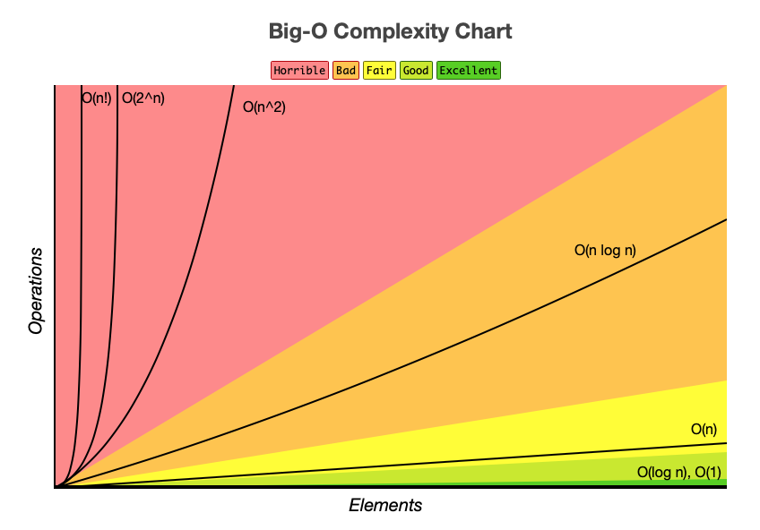
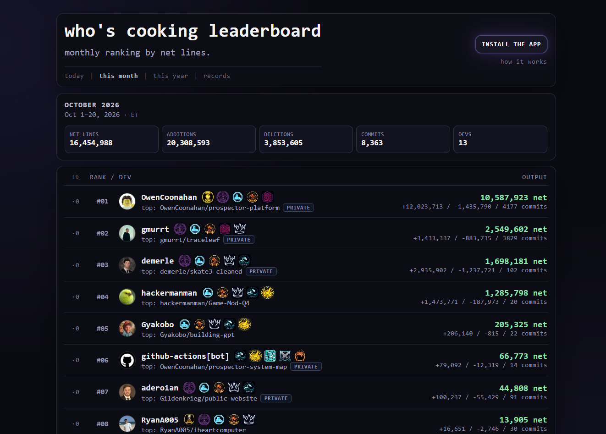
whoscooking.live is a simple service that counts lines of code per user per day.
despite the seeming simplicity, whoscooking is profoundly slow...
warm TTFB p50 from production iad1:
| page | TTFB | |
|---|---|---|
/ | leaderboard & badges. fed by multiple rows | 671 ms |
/records | all time records. contents of one table | 197 ms |
/docs | docs. static page | 87 ms |
breakdown of where we spend our time in a typical homepage hit:
the browser does almost no work, just waiting. similarly the vercel app itself mostly waits on supabase, supabase spends almost half its time waiting on the network!
we also notice that supabase calls wait for the previous one to complete, but is that necessary??
the app is doing one blocking history fetch per user on the board. this scales terribly and it is silly...
we can promise.all the board pieces that do not depend on each other.
we should also try to batch queries instead of sending one at a time per user.
the leaderboard actually doesn't change very often. it's also not important that it is perfectly up to date all the time.
yet, the app does all the work over again for everyone that visits!
why don't we save the results in a cache for a small duration so that the majority of requests can just reuse the already built leaderboard?
this is a super super easy win but there are some downsides...
some users will still miss the cache and all the speed gains. users will also need to wait 30s to see the leaderboard update.
for our app, these downsides are super worth it if the average user gets a big speedup on the work that remains after the network hop.
a lot of what makes a site feel fast is actually about perception.
there are a number of ways to make load times feel shorter and lots of interesting research on the topic.
research is very mixed so this is one you should play with and see what feels right.
cloud tools, serverless functions, managed databases are awesome but they have major downsides.
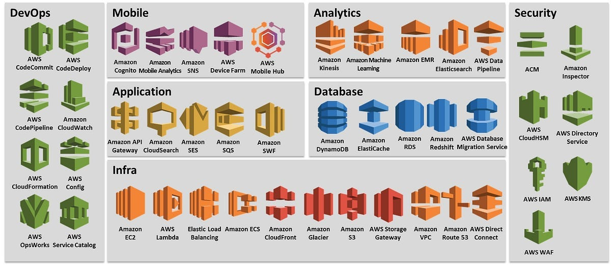
in general, cloud services trade convenience for control.
vercel, supabase, one click deployments, automatically managed databases, etc. are super cool and useful but they introduce latency and overhead.
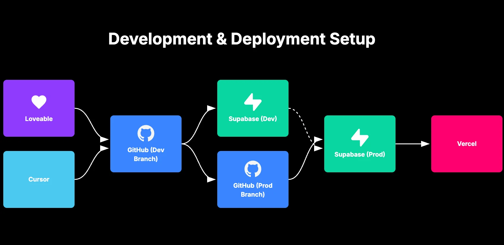
it is far harder to host our own app, manage the database, handle security, build ci/cd, etc. but if the only goal is fast, it can be very worth doing...
moving to even very low end hardware that we own can end up being a benefit to our apps.
owning the process, bundling the database, and configuring how we want can avoid lots of slowness that the cloud typically imposes.
sqlite finishes in ~0.3ms and the always running js process ~0.4ms total. effectively the entire cost is now in unskippable network overhead.
no way we can get faster than that right?
we could optimize the microseconds or do something dumb like rewrite in c but the slowest part about our app right now is just getting to it.
you may think that there is nothing we can do about that but that's not totally true...
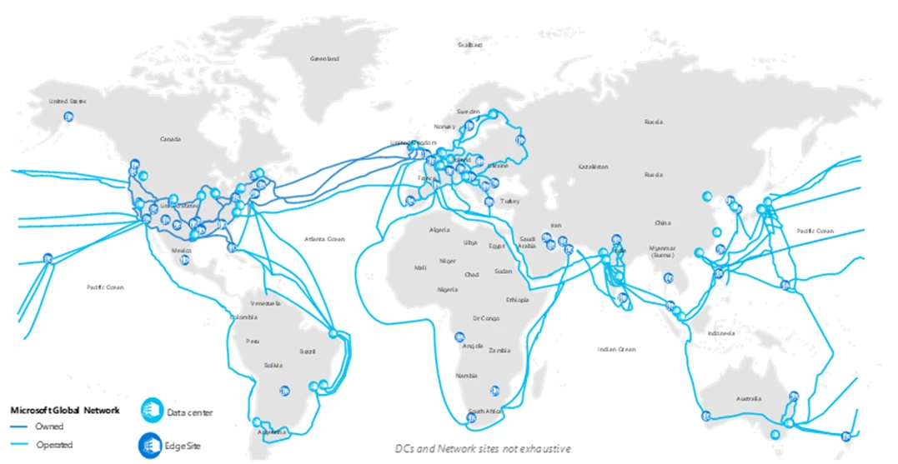
content delivery networks are basically caches all around the world that allow us to put pages physically closer to end users.
the cdn introduces more issues with staleness, however we could expect anywhere from a 2x to 20x network speedup depending on how close we can get an edge cache to an end user.
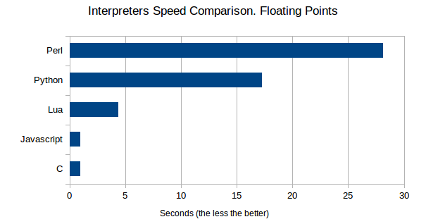
kidding! our app is plenty fast already, a c rewrite could gain us a few milliseconds but the added complexity and fewer tools make it an awful idea and i refuse this week :)
software is slow when it does unnecessary work, expensive work it does not need, or waits unnecessarily.
measure software and go for easy wins first, the language has an effect but there are often a lot of things to do before a rewrite.
understanding of web technologies, tools, and simple physics will take you far and you won't have to write any c.
videos:
reading / toys: